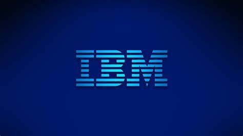

In this project I analysed the Consumer's Credit Card spending data using SQL queries to answer some questions. The goal of the project is to answer a set of questions about credit card usage and consumer spending habits.

In this project, I created a dynamic Power Bi dashboard of the IBM HR dataset to answer some questions about employee attrition and performance data. The goal of this project was to generate actionable insights and recommendations for developing employee retention strategies.
In this project I validated the sales drop of Sprint scooters and figured out the reasons for this decline by conducting in depth analysis for the sales team, and evaluated the effectiveness of email campaign.
In this project I created a Power BI dashboard to showcase all the KPI & metrics of Lionel Messi's club career goals.